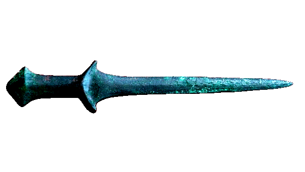

dear future people and things.
i am thrilled to share with you, that i did it. i built the thing— the thing that will thrash All things. its flawless. and now, i will totally get ahead of myself by telling you all of the details before i tell you what it is.
ok:
I. this thing will completely revolutionize our combat styles of today and tomorrow.
II. it’s nothing like a knife.
.. okay it is a Little like a knife, but this thing thrashes, it thrusts, it slices things 3 times the size with half the effort.
and i wont get started on the number of axes ive swung right into my knee, or the knee of a friend behind me.
but not this thing.
III. full of precision, all of the slice, none of the risk.
IV. lightweight design, swift fluid movements, strength and a build sure to last a lifetime.
theres no doubt in my mind that these things will turn the world to a better place. i mean, just imagining the peace itll bring to our homes, the protection to our families, and defense for our land against thieving, oppressive governments. this invention, for me, was nothing short of a divine creation. but anyhow, i havent fine tuned a proper name or anything so, stay tuned, more on the thing later. here’s a visual though: ;)
— thrashRbthrashed709